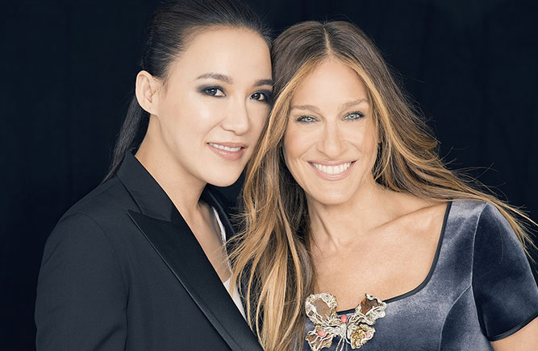
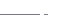

-


赵心绮
赵心绮（Cindy Chao）是台湾首位进军纽约佳士得的珠宝设计师，在建立品牌短短3年后就成为了世界珠宝设计舞台上的一匹中国黑马。
一年只制作36件Master piece的她，让欧美/港台的政要名媛们心甘情愿地把天价珠宝存放在心绮的保险箱里，花上几年等待她的灵感。对于这位年纪轻轻就成为了首位受邀在香港IFC连卡佛百货开店的台湾珠宝设计师，一切听上去更像是一则神乎其神的传奇。
关于设计，我有几个关键词和大家分享。第一个关键词就是自然。第一个关键词就是自然。你用的材料、画的图要自然，而且你的信念、理念统统都应该是来自自然的理念。正是因为你是基于一种自然的理念，来寻求在设计中的想法，你的设计才会体现出来自自然的一切要素，这样才符合现在大家都在追求的和谐。
就让我们带你走进Cindy Chao的瑰丽。